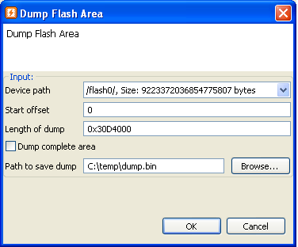

Dumping a flash area will read from a perstistent storage (flash memory) device on connected equipment and store the data in a file.
Please make sure the preferences are correctly configured as described in Flash Kit Preferences. Also make sure that:


Execute the dump area task by:
The following dialog will pop-up and user must fill in correct values in order to start dump task.
